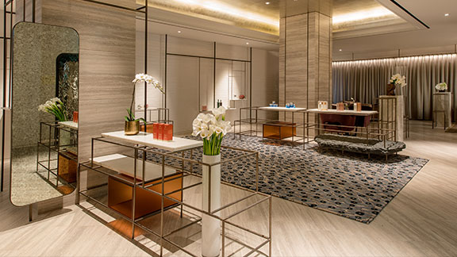
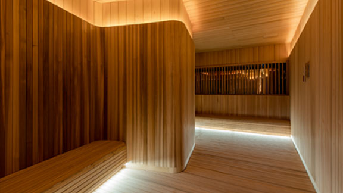
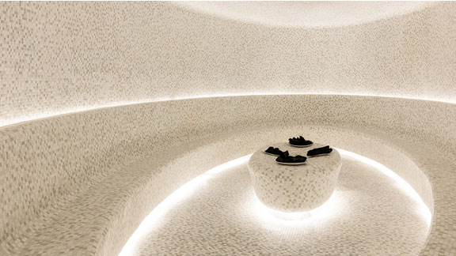
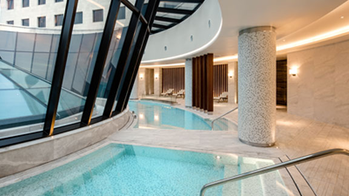
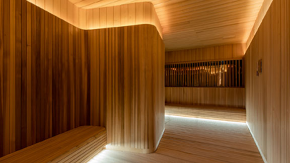
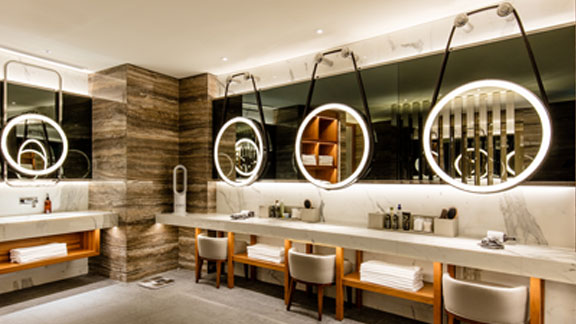
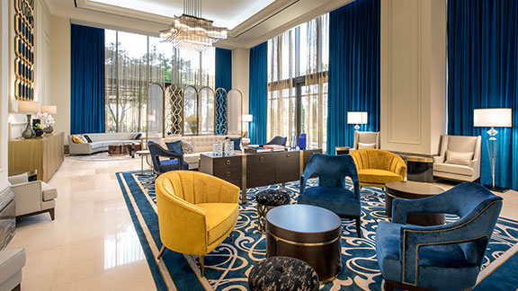
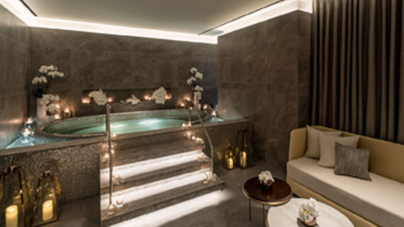
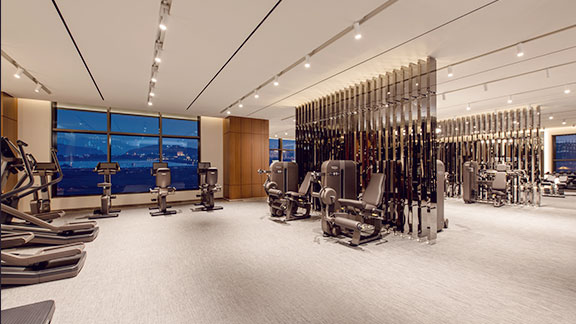

CIMER
장바구니 수량99+ 메뉴다양한 스파 시설과 이용 편의를 고려한 부대시설을 소개합니다.

- JJIMJIL SPA ZONE
- 건강한 심신의 회복을 위한 찜질 스파 존에서는 한국 고유의 찜질 문화와 함께 로오류 서비스, 트리트먼트 등의 디톡스 프로그램을 즐길 수 있습니다.
- 이용시간
-
- 24시간 운영되는 시설입니다.
- 단, 매달 마지막주 일요일 사우나 남/녀 욕장 교체(0시 ~ 5시) 전체 시설은 휴게합니다.
- Jimjjil Spa Zone 안내사항
-
- 감기에 걸렸거나 전신 쇠약 증세가 있으신 분은 시설 이용이 제한됩니다.
- 수축기 혈압이 180mmHg 이상인 분 및 노약자, 임산부, 고열환자 및 중증 심장병 환자는 시설 이용이 제한됩니다.
- 출혈을 많이 한 분 술을 마신 후 2시간 이내인 분은 이용이 제한됩니다.
- 백내장이 우려되거나 안면홍조증 환자인 분은 이용이 제한됩니다.
- 포함시설
-
- 커뮤니티룸
-

- 편안하게 휴식을 취할 수 있는 공간입니다. 벽 한 켠에 위치한 모노 라이브러리의 잡지들을 읽으며 한층 깊이 있는 대화를 나눌 수 있습니다.
Information 운영시간 24 시간 - 편백나무룸
-

- 품질 좋은 편백나무의 고장인 후쿠오카현의 편백나무로 사용한 공간으로, 자연에서의 피톤치드를 느끼며 휴식을 취할 수 있습니다.
Information 온도 28 ºC - 아이스룸
-

- 고온의 찜질 공간에서 오른 몸의 열기를 달래주는 곳으로, 신체 온도의 균형과 몸의 노폐물을 배출하여 피로감을 회복할 수 있는 공간입니다.
Information 온도 13 ºC - 불가마
-

- 녹주산 맥반석을 이용한 곳으로, 몸 속에 쌓여있는 독소 배출을 촉진시켜 스트레스 해소 및 체질 개선에 도움이 되는 공간입니다.
Information 온도 85 ºC - 자수정방
-

- 북한산 자수정으로 이루어진 공간으로, 질병 예방 뿐만 아니라 전통 핀란드 사우나 방식을 현대화한 로오류 서비스로 피부 생기를 회복할 수 있습니다.
Information 온도 65 ºC 로오류서비스 진행횟수 및 시간 - 주중 2회, 주말 3회
(스케쥴 미확정)
- 릴렉스룸
-

- 일본 최고급 리클라이너 체어에서 편안하게 수면을 취하거나 TV, 영화, 음악 등을 즐길 수 있는 성인 전용 휴식 공간입니다.
Information 이용 가능 좌석 수 50 개 - 여성전용 릴렉스룸
-

- 여성 전용 릴렉스룸으로 고급 리클라이너 체어에서 숙면 및 TV, 영화 등을 즐길 수 있는 성인 여성 전용 휴식 공간입니다.
여성 전용 릴렉스룸은 오직 여성 고객만을 위한 공간입니다.
Information 이용 가능 좌석수 20 개 - 소금방
-
- 세계적인 청정 소금으로 이루어진 곳으로, 피부 노폐물 제거를 도와 피부 회복 및 노화 방지에 탁월한 효과를 얻을 수 있습니다.
Information 온도 65 ºC - 웨이보드림
-

- 물결이 천정에 반사되어 심해에 머무는 듯한 느낌을 주는 곳으로 명상을 통해 일상의 긴장감을 제거하고 마음의 여유를 회복할 수 있습니다.
Information 온도 28 ºC - 참숯방
-
- 강원도 횡성의 굴창나무를 이용한 공간으로 참숯이 산성화된 체질을 회복을 도와 불균형한 신체의 리듬을 되찾을 수 있습니다.
Information 온도 65 ºC - 피트니스룸
-

- 강원도 횡성의 굴창나무를 이용한 공간으로 참숯이 산성화된 체질을 회복을 도와 불균형한 신체의 리듬을 되찾을 수 있습니다.